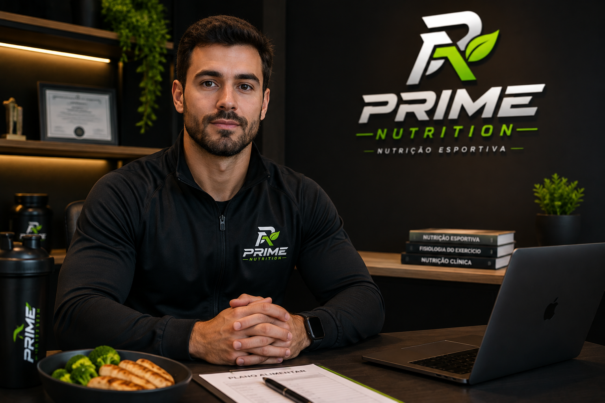

Alimentação personalizada
Estratégias nutricionais pensadas para você.
Nutrição personalizada para ajudar você a alcançar seus objetivos, melhorar sua saúde e evoluir na sua rotina.
Estratégias nutricionais pensadas para você.
Nutrição para potencializar seus resultados.
Uma relação mais saudável com a sua alimentação.
Estratégias nutricionais personalizadas para ajudar você a alcançar seus objetivos com saúde e equilíbrio.
Estratégias nutricionais para melhorar seu desempenho, recuperação e resultados nos treinos.
Alimentação planejada para ajudar você a manter energia e rendimento durante sua rotina.
Acompanhamento nutricional individualizado, focado em resultados sustentáveis.
Estratégias nutricionais para auxiliar no ganho de massa muscular.

Acredito que a alimentação é uma das principais ferramentas para melhorar a saúde, alcançar objetivos e potencializar resultados.
Cada pessoa possui uma rotina, necessidades e objetivos diferentes. Por isso, o acompanhamento nutricional é construído de forma individual e personalizada.
Conhecer o profissionalUm processo pensado para entender suas necessidades e acompanhar sua evolução.
Entendemos sua rotina, objetivos, hábitos e necessidades.
Criamos um planejamento alimentar de acordo com seus objetivos.
Monitoramos sua evolução e realizamos ajustes quando necessário.
Agende sua consulta e tenha uma estratégia nutricional pensada para você e seus objetivos.